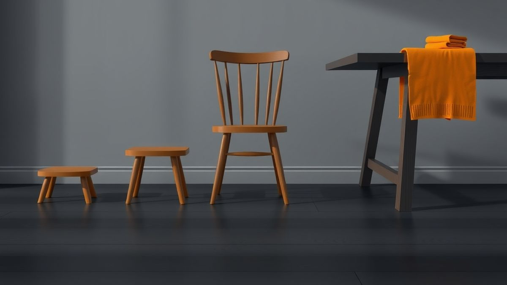
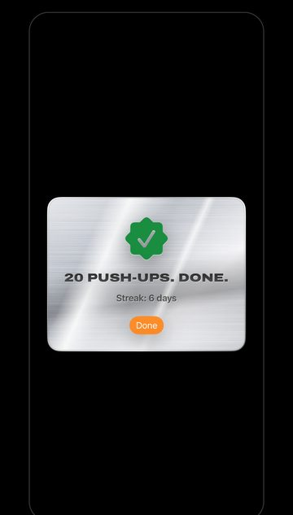

Bodyweight Strength Training at Home: A Plan That Progresses
Bodyweight strength training at home works if every move keeps getting harder. Five exercise ladders, one rule for moving up, a 3-day plan, and the research.


TL;DR
- Bodyweight strength training at home works if the moves keep getting harder. Small trials found similar strength gains to barbell squats and bench press over four to six weeks.
- Use ladders: start where you can do 6–8 clean reps, and climb a rung once you hit 3 sets of 12.
- Cover five patterns: legs, push, pull, hips, trunk. Rows on a door frame or sturdy table train your back with no bar.
- Train three non-consecutive days a week, about 25 minutes. Beginners: two sets, twice a week.
- Stop each set one to three reps short of failure. Stop for sharp pain, and check with a doctor first if you have heart, joint or pregnancy concerns.
Week one, you do 3 sets of 10 squats, 8 push-ups and a 20-second plank. It's hard. You feel it the next day.
Week six, you're doing 3 sets of 10 squats, 8 push-ups and a 20-second plank. It's easy now. You don't feel anything. You start to wonder if bodyweight workouts "work."
They do. That plan just stopped asking anything new of your body around week three.
Bodyweight strength training at home works the same way lifting does: the exercise has to keep getting a bit harder. With a barbell you add plates. At home you add reps, slow down, or move to a harder version of the same move. This guide gives you five exercise ladders, one simple rule for when to climb, and a 3-day week you can start tonight with a floor, a chair and a table.
Can bodyweight strength training at home make you stronger?
Yes, with one condition: progression. The studies that compare bodyweight work with weights are small, but they point the same way.
- Squats. In a 2023 trial in Scientific Reports, 13 sedentary young women trained twice a week for six weeks with either progressive bodyweight squat variations or barbell back squats. Both groups gained leg strength and muscle thickness, with no meaningful difference between them. Only the barbell group's body fat percentage dropped, and with six or seven people per group, it's an early signal rather than proof.
- Push-ups. In a 2018 trial, 23 men with some lifting experience did either progressively harder push-up variations or bench press, three times a week for four weeks. Bench press strength improved similarly in both groups.
- Loaded push-ups. A 2015 study of 30 trained people found that push-ups made harder with elastic bands, matched to a 6-rep bench press effort, gave similar strength gains over five weeks.
Notice the word in every study: progressive. Nobody in those trials did the same easy set for six weeks. They moved to harder versions as they got stronger.
The honest limit: legs are the hardest to keep loading. Squats get easy fast, so you'll lean on one-leg variations sooner. And if your goal is a very heavy lift, you'll eventually want weights. For getting stronger from where most people start, your body is plenty.
The one rule: climb the ladder
Every exercise below is a ladder, from easiest to hardest. You work on one rung at a time.
- Start on the rung where you can do about 6–8 clean reps. Clean means full range, steady speed, no sagging or bouncing.
- Add reps over the weeks. Each session, try to beat last time by a rep or two in any set.
- When you can do 3 sets of 12 clean reps, move up one rung. Your reps will drop back to 6–8. That's the point.
- Stuck on a rung for two or three weeks? Slow the lowering to three seconds, or add a one-second pause at the bottom. Both make the same rung harder.
That's progressive overload, without the jargon. Write each session down: exercise, rung, reps per set. A notebook works. The log is what tells you it's time to climb.
The five ladders
A full-body plan covers five patterns: legs, push, pull, hips and trunk. The WHO recommends muscle-strengthening work for all major muscle groups on at least two days a week, and push-ups and squats alone leave out your back.
| Rung | Legs | Push | Pull | Hips | Trunk |
|---|---|---|---|---|---|
| 1 | Sit to a chair and stand | Wall push-up | Door-frame row, body nearly upright | Glute bridge | Plank, hands on a counter |
| 2 | Bodyweight squat | Counter or sturdy table push-up | Door-frame row, feet closer to the frame | Bridge with a 2-second hold | Knee plank on the floor |
| 3 | Reverse lunge | Knee push-up | Table row, knees bent | Bridge, feet on a chair | Forearm plank |
| 4 | Split squat | Floor push-up | Table row, legs straight | Single-leg bridge | Plank with shoulder taps |
| 5 | Split squat, back foot on a chair | Feet-raised push-up | Pull-up negatives (with a bar) | Single-leg bridge, foot on a chair | Side plank |
For planks, "reps" become seconds: when you can hold 3 sets of 30–45 seconds with a straight body, climb. Long, saggy holds don't count.
Form, briefly. Legs: heels down, knees track over your toes, chest up; the bodyweight squat form guide has the full checklist. Push: one straight line from head to heels, elbows about 45 degrees from your body, chest to your hands. If floor push-ups are still a way off, the 4-week first push-up plan fills in rungs 1 to 4. Hips: push through your heels and squeeze; don't arch your lower back to get higher.
Training your back without a pull-up bar
Pulling is where most home plans give up and tell you to buy a bar. You don't need one yet.
Door-frame row: stand in an open doorway, grip both sides of the frame at chest height, lean back with straight arms, then pull your chest toward the gap. The closer your feet are to the frame, the harder it is. Grip the solid frame, not the door, and start upright enough that you could just stand up if your grip slips.
Table row: lie under a heavy, solid table, grip the edge, and pull your chest up to it with your body straight. Before you try it, check the table can't tip or slide: push down hard on the edge first. Skip folding tables, glass tops and anything light. If you're unsure, stay with door-frame rows.

When table rows get easy, you're ready for a bar. The first pull-up plan picks up from there.
A 3-day bodyweight strength training plan
Three full-body sessions a week, on non-consecutive days (say Monday, Wednesday, Friday). That matches the ACSM's long-standing advice for beginners: train the whole body two to three days a week. Each session takes about 25 minutes.
| Step | What to do | Sets x reps |
|---|---|---|
| Warm-up | March in place, arm circles, 10 easy squats, 10 wall push-ups | 3 minutes |
| 1 | Legs (your rung) | 3 x 6–12 (each leg for lunges and split squats) |
| 2 | Push (your rung) | 3 x 6–12 |
| 3 | Pull (your rung) | 3 x 6–12 |
| 4 | Hips (your rung) | 3 x 8–12 (each leg for single-leg) |
| 5 | Trunk (your rung) | 3 x 20–45 seconds |
Rest one to two minutes between sets, or pair two exercises (legs then push, rest, repeat) to save time. On the days in between, walk, stretch or do nothing.
Beginner version: if you're new or coming back after a long break, do 2 sets of each, twice a week, and start every ladder on rung 1 or 2 even if it feels easy. The first couple of weeks are for learning the moves. Add the third set and the third day once the sessions feel routine.
Short on time: one set of each move, done properly, is a real workout. The ACSM notes that novices gain about as much from single-set programs as from multiple sets. Twelve minutes beats the 25-minute session you skip.
How hard should each set feel?
Hard, but not all-out. End most sets when you could do one to three more clean reps. Your last couple of reps should be slow and take real effort.
You don't need to go to failure to get stronger. A 2022 meta-analysis of 15 studies in young adults found no significant difference in strength or muscle size between sets taken to failure and sets stopped short of it. Stopping short keeps your form cleaner and makes the next session easier to show up for.
The opposite problem is more common at home: sets that are far too easy. If you could do 30 more, you're on the wrong rung. Climb.
Safety, plainly: muscle burn and shaky last reps are normal; sharp pain, joint pain, dizziness or chest pain are not, so stop. Soreness that lasts more than a few days means you did too much; drop a set next time. If you have a heart condition, high blood pressure, an injury, are pregnant, or haven't exercised in a long time, check with a doctor before you start.
Questions people ask
How long until I get stronger?
The trials above measured real strength gains in four to six weeks, in small groups who trained consistently. Your first wins will show up in your log sooner: more reps on the same rung. That counts.
Can I do bodyweight strength training every day?
Not this plan. Hard sets need a rest day between them. If you want to move daily, keep the hard sessions to three days and use easy practice sets on the others, like the approach in grease the groove, well short of effort.
When should I add weights?
When you're on rung 5 of a ladder and the 3-day plan stops moving for a month, a backpack loaded with books for squats and split squats, or a set of dumbbells, is the next step. Many people never need it.
The plan works. Starting it is the hard part.
Nobody quits a ladder plan because rung 3 was too hard. They quit because the session at 8 p.m. turned into an hour of videos and then it was too late.
That's the gap Rep Rot is built for. It locks the apps you lose hours to until you get up and move: hit your limit, and the app stays locked until you do a set of push-ups, squats or sit-ups, counted by your iPhone's camera. It won't run your 3-day plan or log your rungs; keep the notebook. But the set that unlocks your phone can be the first set of the session.

Real movement, counted right on your phone. No faking it. Rep Rot has a free plan and a 7-day Pro trial, and it's in testing now: email help@reprotapp.com for early access.
Sources: Wei W et al., "Effects of progressive body-weight versus barbell back squat training on strength, hypertrophy and body fat among sedentary young women", Scientific Reports (2023); Kotarsky CJ et al., "Effect of progressive calisthenic push-up training on muscle strength and thickness", Journal of Strength and Conditioning Research (2018); Calatayud J et al., "Bench press and push-up at comparable levels of muscle activity results in similar strength gains", Journal of Strength and Conditioning Research (2015); Grgic J et al., "Effects of resistance training performed to repetition failure or non-failure on muscular strength and hypertrophy: a systematic review and meta-analysis", Journal of Sport and Health Science (2022); Bull FC et al., "World Health Organization 2020 guidelines on physical activity and sedentary behaviour", British Journal of Sports Medicine (2020); American College of Sports Medicine, "Progression models in resistance training for healthy adults", Medicine & Science in Sports & Exercise (2009).